Binary Symplectic Form¶
The qecc package provides support for vectors and matrices in binary symplectic form, including support for algorithms acting on these representations. Note that all classes and functions documented here depend on the numpy package.
qecc.BinarySymplecticVector - Binary symplectic representation of Pauli group elements¶
- class qecc.BinarySymplecticVector(*args)¶
Encapsulates a binary symplectic vector representing an element of the Pauli group on
 qubits.
qubits.A new BinarySymplecticVector can be constructed using either a single NumPy array containing both the
 and
and  parts of the
binary symplectic vector. Alternatively, a new vector can be instantiated
using two NumPy arrays. For example, the following two invocations are
equivalent:
parts of the
binary symplectic vector. Alternatively, a new vector can be instantiated
using two NumPy arrays. For example, the following two invocations are
equivalent:>>> import qecc >>> import numpy as np >>> bsv = qecc.BinarySymplecticVector(np.array([1, 0, 0, 0, 0, 0])) >>> bsv = qecc.BinarySymplecticVector(np.array([1, 0, 0]), np.array([0, 0, 0]))
The len of a BinarySymplecticVector is defined as the number of qubits upon which the represented Pauli operator acts, and is thus half of the length of a single array containing the same data.
- x¶
Array containing the
part of the binary symplectic vector.Return type: numpy.ndarray, shape (2 * nq, ).
- z¶
Array containing the
part of the binary symplectic vector.Return type: numpy.ndarray, shape (nq, ).
- copy()¶
Returns a copy of the binary symplectic vector such that mutations of the copy do not affect this instance. For more details, see the numpy.ndarray.copy() method.
- as_pauli()¶
Returns an instance of qecc.Pauli representing the same Pauli operator as this vector. Note that phase information is not preserved by the binary symplectic representation of the Pauli group, and so P.as_bsv().as_pauli() need not equal P.
- bsip(other)¶
Returns the binary symplectic inner product 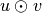 of this vector with another vector. Letting 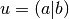 and 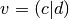, 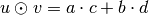.
Utility Functions¶
- qecc.all_pauli_bsvs(nq)¶
For a given number of qubits nq, returns an iterator that yields the binary symplectic representations of each element of the Pauli group 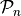.
- qecc.constrained_set(pauli_array_input, logical_array_input)¶
Given a set of constraints of the form 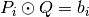, with each
 a Pauli operator and each
a Pauli operator and each  a bit, yields an
iterator onto Pauli operators
a bit, yields an
iterator onto Pauli operators  such that all constraints are
satisfied.
such that all constraints are
satisfied.Parameters: - pauli_array_input (list of qecc.Pauli instances.) – Constraint operators .
- logical_array_input (numpy.ndarray of dtype=int and shape
(len(pauli_array_input), ).) – Constraint values .
- pauli_array_input (list of qecc.Pauli instances.) – Constraint operators
- qecc.commute(bsv1, bsv2)¶
returns True if bsv1 and bsv2 commute by evaluating the symplectic inner product.
- qecc.xz_switch(bsv)¶
Given a qecc.BinarySymplecticVector, returns a new vector whose
and parts have been swapped.
qecc.BinarySymplecticMatrix - Binary symplectic representation of Clifford group elements¶
- class qecc.BinarySymplecticMatrix(*args)¶
- nq¶
Returns the number of qubits that the binary symplectic matrix acts upon.
- xc¶
- zc¶
- xr¶
- zr¶
- xx¶
- xz¶
- zx¶
- zz¶
- left_H(j)¶
Multiplies on the left by a Hadamard gate on the
 qubit. This method acts in-place, as opposed to acting on a copy of the
binary symplectic matrix. In order to preserve the original matrix,
use the copy() method:
qubit. This method acts in-place, as opposed to acting on a copy of the
binary symplectic matrix. In order to preserve the original matrix,
use the copy() method:>>> new_bsm = bsm.copy().left_H(idx)
- right_H(j)¶
Multiplies on the right by a Hadamard gate on the
qubit. See left_H() for more details.
- right_H_all()¶
Multiplies on the right by a Hadamard gate on each qubit. See left_H() for more details.
- left_SWAP(j, k)¶
Multiplies on the left by a SWAP gate between the
and 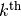 qubits. This method acts in-place, as opposed
to acting on a copy of the binary symplectic matrix. In order to
preserve the original matrix, use the copy() method:>>> new_bsm = bsm.copy().left_SWAP(j, k)
- right_SWAP(j, k)¶
Multiplies on the right by a SWAP gate between the
and qubits. See left_SWAP() for more
details.
- left_CNOT(c, t)¶
Multiplies on the left by a CNOT gate controlled by the 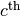 qubit and targeting the qubit. This method acts in-place, as opposed to acting on a copy of the binary symplectic matrix. In order to preserve the original matrix, use the copy() method:
>>> new_bsm = bsm.copy().left_CNOT(c, t)
- right_CNOT(c, t)¶
Multiplies on the right by a CNOT gate controlled by the qubit and targeting the qubit. For more details, see left_CNOT().
- left_R_pi4(i)¶
Multiplies on the left by an 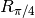 gate acting on the
 qubit. This method acts in-place, as opposed to
acting on a copy of the binary symplectic matrix. In order to preserve
the original matrix, use the copy() method:
qubit. This method acts in-place, as opposed to
acting on a copy of the binary symplectic matrix. In order to preserve
the original matrix, use the copy() method:>>> new_bsm = bsm.copy().left_R_pi4(c, t)
- right_R_pi4(i)¶
Multiplies on the right by an gate acting on the
qubit. For more details, see
left_R_pi4().
- left_CZ(c1, c2)¶
Multiplies on the left by an controlled-
gate acting between
the 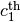 and 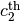 qubits. This
method acts in-place, as opposed to acting on a copy of the binary
symplectic matrix. In order to preserve the original matrix, use the
copy() method:>>> new_bsm = bsm.copy().left_CZ(c, t)
- right_CZ(c1, c2)¶
Multiplies on the right by an controlled-
gate acting between
the and qubits. For more
details, see left_CZ().
- inv(check_validity=True)¶
Returns the inverse of this binary symplectic matrix, assuming that this matrix represents a valid Clifford gate.
Note that if the matrix
 does not represent a valid Clifford,
this method will return a matrix
does not represent a valid Clifford,
this method will return a matrix  such that 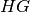 is
not the identity matrix.
such that 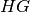 is
not the identity matrix.Parameters: check_validity (bool) – If True, then the matrix is first checked to ensure that it is a valid Clifford. Raises : qecc.InvalidCliffordError if check_validity is True and the binary symplectic matrix being inverted does not represent a valid Clifford group element.
- as_clifford(check_validity=True)¶
Converts this binary symplectic matrix into a Clifford representation.
Parameters: check_validity (bool) – If True, then the matrix is first checked to ensure that it is a valid Clifford. Return type: qecc.Clifford Returns: The same gate as this binary symplectic matrix, represented as an instance of qecc.Clifford.
- is_valid()¶
- copy()¶
Returns a copy of this binary symplectic matrix, pointing to a distinct location in memory.
- circuit_decomposition(validate=True)¶
Decomposes the binary symplectic matrix
- qecc.is_bsm_valid(input_bsm)¶
- qecc.bsmzeros(nq)¶
Returns a binary symplectic matrix on
qubits, initialized to all
zeros.Parameters: nq (int) – Number of qubits that the created matrix will act upon. Returns: A binary symplectic matrix containing all zeros. Return type: BinarySymplecticMatrix
- qecc.array_to_pauli(bsv_array)¶